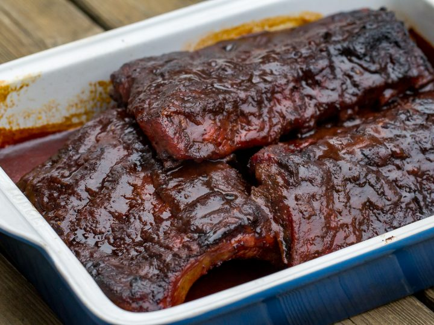
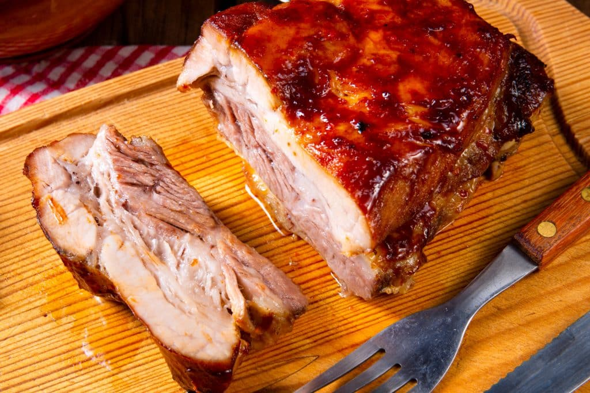
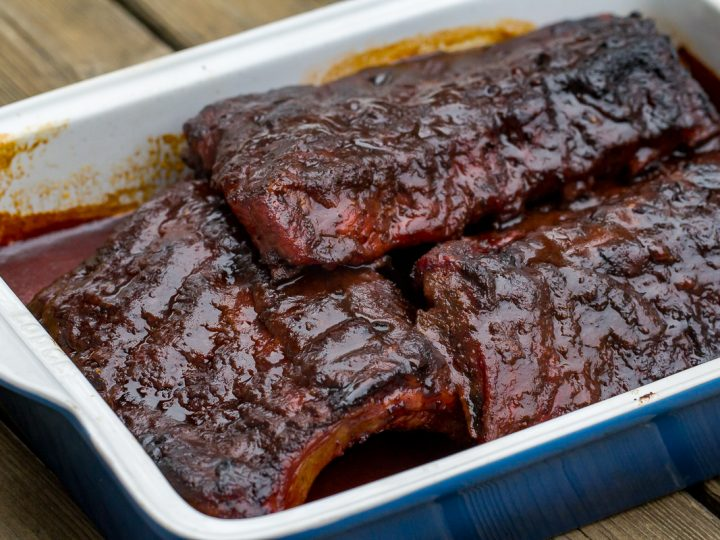
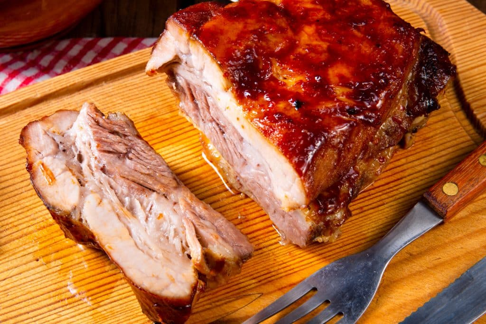
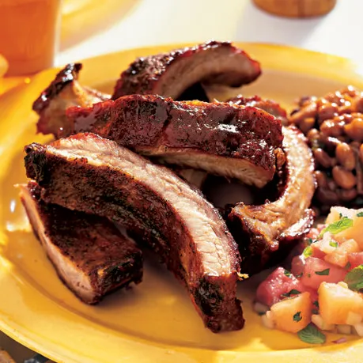
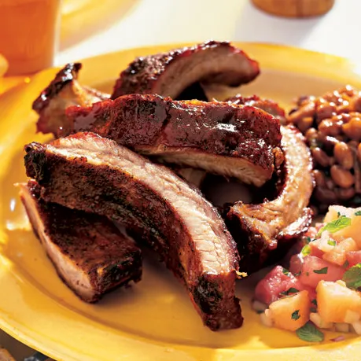

| Step 1 |
For dry rub, whisk salt, smoked paprika, onion powder, garlic
powder, and 1/2 teaspoon black pepper together
in a small bowl; set aside. |
| Step 2 |
For wet rub, whisk mustard, vinegar, and 2 tablespoons cherry cola
together in a small bowl; set aside. |
| Step 3 |
Preheat the oven to 250°F (120°C). Line a sheet pan
with a piece of foil long enough to
extend past the rack of ribs by at least 6 inches on both ends. Use large size, heavy-duty
foil if possible.
Place the ribs, meat side up, on the foil. |
| Step 4 |
Brush wet rub over top and sides, and sprinkle about 60% of dry rub
over the surface. Turn ribs over and,
with the bone side up, brush with wet rub, then sprinkle with all the remaining dry rub.
Reserve any wet rub
left at this point. |
| Step 5 |
Center the ribs lengthwise on the foil, and bring up the ends of
the foil, like a boat, and crimp so any
juices will stay inside. Crimp the two long edges together over the top of the ribs. The
foil doesn’t have
to be airtight, but the whole rack should be covered. |
| Step 6 |
Bake in the preheated oven for 2 hours. Remove, open the foil, and
pour off juices that have accumulated in
the foil into a saucepan. |
| Step 7 |
Turn the rack meat side up, and brush with wet rub. Enclose again
in the foil, and continue to roast at 250°F (120°C) for 1 hour. |
| Step 8 |
While meat is cooking, add any remaining wet rub to the juices in
the saucepan, then add the 1 1/2 cups
cherry cola, ketchup, and 1/4 teaspoon freshly ground black pepper. |
| Step 9 |
Bring to a simmer on medium high, cook until liquid is reduced by
half. Reduce heat further, and simmer
liquids very slowly until they eventually thicken and become sauce-like. Once it is the
thickness of
barbecue sauce, remove from heat entirely. |
| Step 10 |
After one hour at 250°F (120°C), remove ribs from
the oven, and open out the foil, pressing
foil flat to line the pan. |
| Step 11 |
Turn the oven temperature up to 300°F (150°C). |
| Step 12 |
Brush ribs with sauce. Return ribs to the oven for 15 minutes.
Repeat this process, brushing ribs with sauce
every 15 minutes, until ribs are tender and come easily off the bone, about 1 hour more.
(See Note) (150°C). |
| Step 13 |
Let ribs rest for about 10 minutes. Slice between each rib with a
sharp knife, and serve with extra sauce. |
 




 
